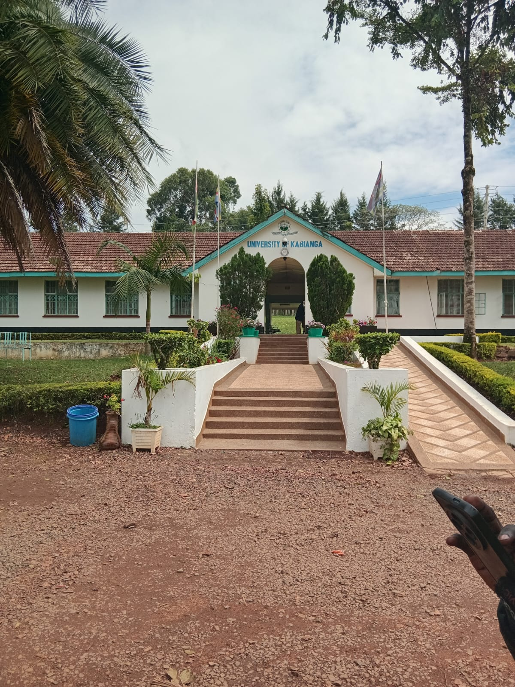

University Leadership Directory
Access information about key university offices, leadership, and administrative services at the University of Kabianga.
🏛️ University Management & Key Offices
👤 Vice-Chancellor
Prof. Eric Koech, PhD, MBS
Office of the Vice-Chancellor

Vice Chancellor's Office, University of Kabianga
The Office of the Vice-Chancellor provides overall leadership, strategic direction, and administrative oversight of the University of Kabianga.
Key Responsibilities:
- Overall university leadership.
- Strategic planning and institutional development.
- Oversight of academic and administrative operations.
- Promotion of excellence, innovation, and growth.
Office Location:
Vice Chancellor's Office
🎓 Deputy Vice-Chancellor
Prof. Dr. Fredrick Nyongesa Kassilly
Academic, Research and Extension
This office oversees academic affairs, research activities, innovation, extension services, and related university functions.
Key Responsibilities:
- Academic leadership and coordination.
- Research and innovation development.
- Extension and community engagement.
- Promotion of academic excellence.
Office Location:
To be confirmed.
Deputy vice chancellor
Prof. Maurice Owino Oduor
Administration, Finance and Planning
This office oversees administrative operations, financial planning, institutional resources, and university development.
Key Responsibilities:
- Administrative management.
- Financial planning and resource allocation.
- Institutional infrastructure and development.
- Coordination of university operations.
Office Location:
To be confirmed.
📋 University Registrar
Dr. Cecilia Sang
Office of the University Registrar
The Registrar's Office coordinates important academic and administrative processes within the university.
Services and Responsibilities:
- Academic registration guidance.
- Student academic records.
- Examination administration information.
- Academic regulations and procedures.
- Graduation-related administration.
Office Location:
To be confirmed.
🎓 Dean of Students
Dr. Peter Ngugi
Office of the Dean of Students
The Dean of Students' Office supports student welfare, guidance, orientation, and student-related services.
Services and Responsibilities:
- Student welfare support.
- Student orientation and guidance.
- Student organizations and clubs.
- Accommodation-related guidance.
- Student support and referrals.
Office Location:
To be confirmed.
🔬 Director of Research
Prof. Issa Mwamzandi
Directorate of Research, Innovation and Consultancy
The Directorate promotes research, innovation, technology development, knowledge transfer, and consultancy activities within the University of Kabianga.
Services and Responsibilities:
- Research project guidance.
- Innovation support and development.
- Student innovation mentorship.
- Research collaboration opportunities.
- Intellectual property guidance.
- Technology transfer and consultancy.
Office Location:
To be confirmed.
💻 Director of ICT
Mr. Geoffrey Sowek
Directorate of Information and Communication Technology
The ICT Directorate supports digital transformation, information systems, technology infrastructure, and ICT services across the university.
Key Responsibilities:
- ICT infrastructure and systems.
- Technical support services.
- Digital transformation initiatives.
- Information security and technology management.
Office Location:
To be confirmed.
💰 Finance Office
Directorate of Finance
The Finance Office manages financial administration and provides guidance on university financial matters.
Services:
- Student fee payment guidance.
- Financial administration.
- Budget and resource management.
- Official financial inquiries.
Office Location:
To be confirmed.
Why This Directory Matters
The University Leadership Directory is part of the University of Kabianga Smart Campus Navigator initiative. It helps students, staff, visitors, and members of the university community identify the appropriate offices for academic, administrative, welfare, research, innovation, and institutional services.
The directory will continue to be updated with verified official information, office locations, contacts, and navigation routes as the Smart Campus Navigator expands.
Looking for a University Office?
Use the Campus Map to locate offices and facilities around the university.